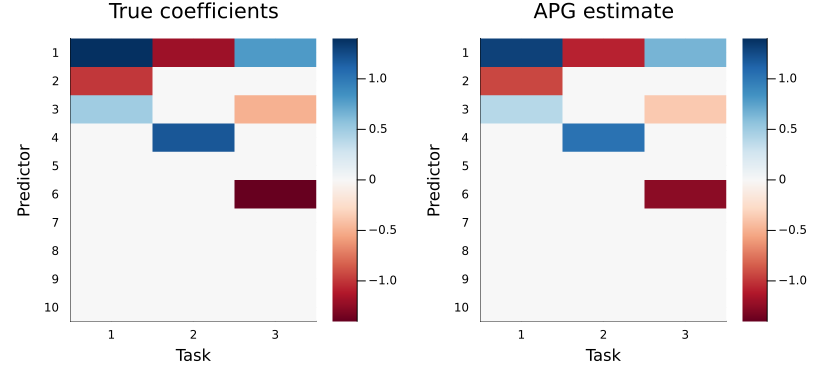

Multi-response lasso: entrywise sparsity
Multi-response lasso: entrywise sparsity
Fit three responses on a shared design using the objective
\[\frac{1}{2n}\|Y-XB\|_F^2 + \lambda\sum_{j,k}|B_{jk}|.\]
The loss scale is 1/n, with no division by the number of responses. Each coefficient has its own absolute-value penalty, including diagonal entries when the coefficient matrix is square. The multi-task group lasso uses row groups to select or omit a predictor jointly across tasks.

The example uses a shared predictor and task-specific predictors. We generate noisy responses and fit without an intercept.
using LinearAlgebra, Printf, ProximalBase, ProximalSolvers, Random
rng = Xoshiro(469)
n, p, K = 96, 10, 3
X = randn(rng, n, p)
B_true = zeros(p, K)
B_true[1, :] .= [1.4, -1.2, 0.8]
B_true[2, 1], B_true[4, 2], B_true[6, 3] = -1.0, 1.2, -1.4
B_true[3, 1], B_true[3, 3] = 0.5, -0.5
Y = X * B_true + 0.12 * randn(rng, n, K)96×3 Matrix{Float64}:
6.18246 -3.62639 -1.33063
-1.34673 -2.6189 0.736357
-1.22734 2.22098 1.95802
2.74503 -1.24086 1.70135
-1.3508 -0.622934 -4.09483
2.53589 -0.683268 0.377865
-3.07422 3.65551 -1.94382
0.667257 0.263174 0.748699
3.45573 -2.05274 -0.825181
1.68255 -0.877944 -0.0788022
⋮
-2.00028 -1.03715 -0.412371
-1.26818 -0.0710484 0.335032
-3.76563 1.76728 -2.67484
-2.67174 1.76197 -0.298286
3.22647 -3.7743 0.438432
-0.62464 1.19783 -0.734801
0.535802 0.750982 -1.46478
4.27588 -1.19276 1.12915
-0.71654 -0.900333 0.302147The two solves share the data and penalty. Each solver writes into its own coefficient matrix.
s, lambda = 1/n, 0.12
f, g = s * LeastSquaresLoss(Y, X), NormL1(lambda)
opts = ProximalOptions(maxiter=10_000, ftol=0, gradtol=1e-8, allow_f_increases=true)ProximalOptions{Nothing}(10000, 0.0, 1.0e-8, 1.0e-8, 0, 0, 0, true, false, false, false, 1, nothing, Inf)Recompute the objective and stationarity score from the data at each fit. A nonzero coefficient must balance its signed penalty derivative with the loss gradient. At zero, the magnitude of the gradient must be at most lambda.
function fit_diagnostics(X, Y, B, s, lambda)
residual = X * B - Y
gradient = s * (X' * residual)
scores = map(B, gradient) do b, g
iszero(b) ? max(abs(g) - lambda, 0.0) : abs(g + lambda * sign(b))
end
objective = s * sum(abs2, residual)/2 + lambda * sum(abs, B)
rmse = sqrt.(vec(sum(abs2, residual; dims=1)) ./ size(X, 1))
(; objective, max_kkt=maximum(scores), rmse)
end
B_pgd, B_apg = zeros(p, K), zeros(p, K)
for (name, method, B) in (("PGD", ProximalGradientDescent(), B_pgd),
("APG", AccProxGradDescent(), B_apg))
result = solve!(B, f, g, method, opts)
diagnostics = fit_diagnostics(X, Y, B, s, lambda)
@assert result.minimizer === B
@assert isapprox(result.minimum, diagnostics.objective; rtol=1e-12)
@assert diagnostics.max_kkt <= 1e-6
@printf("%s iterations=%d converged=%s max KKT=%.2e\n",
name, result.iterations, result.converged, diagnostics.max_kkt)
for task in 1:K
selected = findall(!iszero, view(B, :, task))
@printf(" Task %d selected %s response RMSE %.3f\n", task, selected, diagnostics.rmse[task])
end
show(stdout, "text/plain", round.(B; digits=3))
println()
endPGD iterations=16 converged=true max KKT=9.72e-10
Task 1 selected [1, 2, 3] response RMSE 0.224
Task 2 selected [1, 4] response RMSE 0.213
Task 3 selected [1, 3, 6] response RMSE 0.271
10×3 Matrix{Float64}:
1.309 -1.083 0.656
-0.937 0.0 0.0
0.398 0.0 -0.372
0.0 1.043 0.0
0.0 0.0 0.0
0.0 0.0 -1.264
0.0 0.0 0.0
0.0 0.0 0.0
0.0 0.0 0.0
0.0 0.0 0.0
APG iterations=22 converged=true max KKT=4.89e-09
Task 1 selected [1, 2, 3] response RMSE 0.224
Task 2 selected [1, 4] response RMSE 0.213
Task 3 selected [1, 3, 6] response RMSE 0.271
10×3 Matrix{Float64}:
1.309 -1.083 0.656
-0.937 0.0 0.0
0.398 0.0 -0.372
0.0 1.043 0.0
0.0 0.0 0.0
0.0 0.0 -1.264
0.0 0.0 0.0
0.0 0.0 0.0
0.0 0.0 0.0
0.0 0.0 0.0At the maximum entrywise penalty threshold, the zero matrix satisfies all coefficient conditions. Check this on a tiny design with two tasks.
X_small = [1.0 0.0; 0.0 1.0]
Y_small = [2.0 -1.0; 0.0 3.0]
s_small = 1 / size(X_small, 1)
lambda_max = maximum(abs, s_small * (X_small' * Y_small))
for method in (ProximalGradientDescent(), AccProxGradDescent())
B_small = zeros(2, 2)
solve!(B_small, s_small * LeastSquaresLoss(Y_small, X_small), NormL1(lambda_max), method)
@assert iszero(B_small)
@assert iszero(fit_diagnostics(X_small, Y_small, B_small, s_small, lambda_max).max_kkt)
end
using Plots
limit = max(maximum(abs, B_true), maximum(abs, B_apg))
panels = [heatmap(1:K, 1:p, B; title, color=:RdBu, clims=(-limit, limit),
xlabel="Task", ylabel="Predictor", xticks=1:K, yticks=1:p, yflip=true)
for (title, B) in (("True coefficients", B_true), ("APG estimate", B_apg))]
figure = plot(panels...; layout=(1, 2), size=(820, 380), left_margin=4Plots.mm)
savefig(figure, "multiresponse_lasso.svg")
nothing